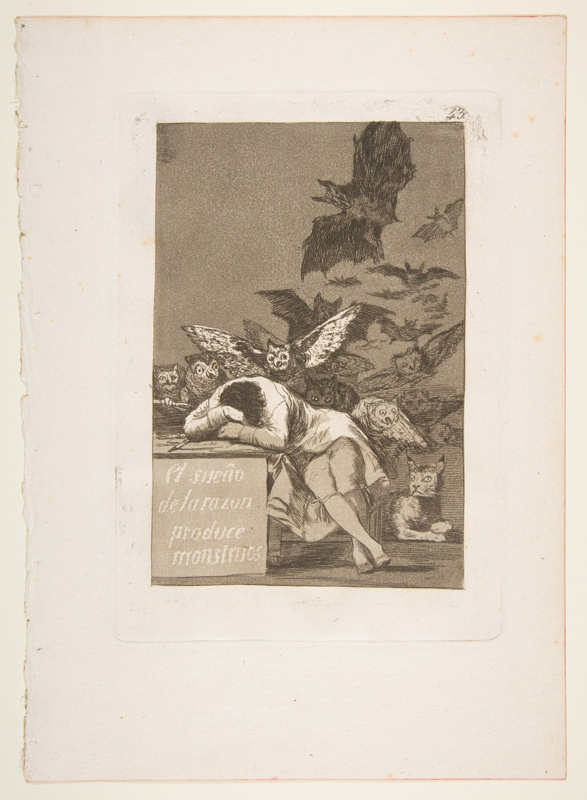
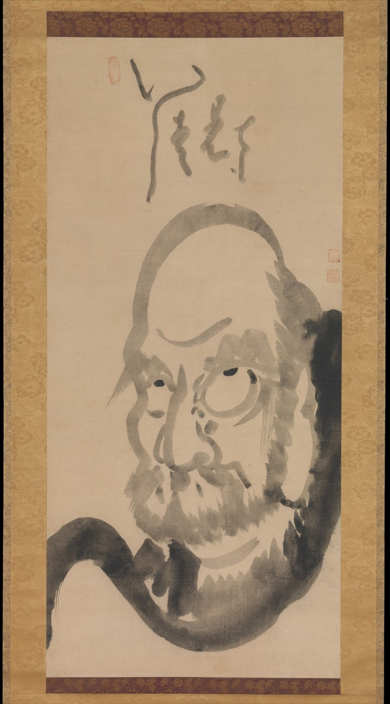
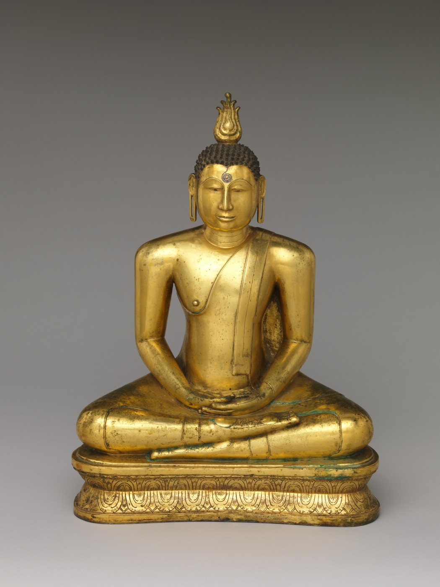

Uisang · Diagram of the Dharma Realm
Poetry · art · Buddhism · Korean history
A poem arranged as a seal-diagram. Uisang’s Ocean Seal brings text, image, recitation and the interpenetration of all things into one work.
A lifetime of possibilities for a shared first-year experience.
Begin with a poem, a painted face, a voice, a scientific claim. Follow the connections across cultures, centuries and the Lawrence campus.

Reason, imagination and the creatures of the night.
The Met · Public Domain
A Zen teacher rendered as an arresting presence.
The Met · Public Domain
Mental cultivation given a bodily form.
The Met · Public DomainNo matching entries. Clear the search to see this section.
Read. Look. Listen.
Poems, books, diagrams, music and art that make mind their subject. A growing collection of possibilities for sustained encounter.
Poetry · art · Buddhism · Korean history
A poem arranged as a seal-diagram. Uisang’s Ocean Seal brings text, image, recitation and the interpenetration of all things into one work.
Buddhism · print · art · technology
A Korean Buddhist work on mind and awakening. Its 1377 edition is the oldest surviving book printed with movable metal type.
Chinese thought · athletics · performance
Practiced movement and cultivated attention. Bring the butcher’s account into conversation with music and sport.
Computing · language · philosophy
A concrete text for examining how we recognize thinking in a machine.
Music · attention · community
Text scores make attention and collective listening part of the musical work itself.
Buddhism · poetry · ethics
Mental cultivation, attention and conduct within a Buddhist account of liberation.
Poetry · philosophy · neuroscience
A short poem makes mind, world and scale available through the precision of poetic form.
Poetry · inner experience
Division, sequence and the effort to reconnect thought. A compact work for close attention to language.
Poetry · music · psychology
Sound, movement and the breakdown of sense make an inward experience take poetic form.
Chinese literature · philosophy
Dreaming, transformation and the limits of a fixed account of self.
Literature · memory · philosophy
A person who cannot forget makes perfect memory a problem for thinking.
History · literature · music
Double-consciousness, racial power and the social self. The Sorrow Songs make listening part of reading.
History · translation · religion
Observation, interpretation and religious life across cultures. Korean Buddhist translation expertise belongs in this conversation.
Al-Ghazālī · Islamic philosophy
An autobiographical search for reliable knowledge, from radical doubt to religious practice.
Natsume Sōseki · Japanese novel
Trust, guilt and the difficulty of knowing another person. The title itself joins heart and mind.
Ursula K. Le Guin · fiction
Dreams alter reality; a supposed cure becomes a struggle over whose imagined world others must inhabit.
Oliver Sacks · clinical narratives
Recognition, memory and identity through accounts of people living with neurological differences.
Music · sacred text · embodied practice
Breath, memorization, collective attention and acoustic space. Select a named chant and recording with a music specialist.
Lygia Clark · participatory art
An artwork unfolds through a participant’s action: cutting a paper Möbius strip makes choice and perception part of its form.

Thinking represented through the tension of a whole body.
The Met · Public Domain
A heart-shaped object beside a tradition that connects heart, memory and moral life.
The Met · Public DomainPeople who change the account.
Writers, artists, philosophers and researchers who offer distinct ways to understand mind. Begin with a work, then follow its argument.
Biology · cognition beyond brains
Cellular communication and collective problem-solving broaden the study of cognition. Adaptive behavior and felt experience remain distinct claims.
Neuropsychology · feeling
An account of consciousness that places feeling and bodily needs at its center. Begin with The Hidden Spring, then examine the research.
AI · consciousness research
Work on artificial systems, learning and reports of experience. Examine what the experiments establish and what remains an interpretation.
Korean Buddhism · Hwaŏm
The Ocean Seal gives philosophical thought a visual and recitable form. Its Buddhist account of interpenetration belongs beside the poem’s patterned design.
Chinese philosophy · transformation
Dreams, skilled action and shifting perspectives unsettle a fixed account of the knowing self.
Poetry · inward experience
The brain, the sky, a funeral, a cleaving: poems use exact language to make thought and its disruptions perceptible.
Islamic thought · certainty
Examines the limits of perception and reasoning within an account of religious knowledge and practice.
History · sociology · social self
Double-consciousness describes self-understanding under racial domination. The social world enters the experience of being a person.
Composition · listening
Makes attention, listening and participation material for musical work. Sonic Meditations offers a concrete place to begin.
Computing · intelligence
Turns judgments about machine thinking into an explicit test. His essay gives AI discussions a shared text and a history.
Psychology · habit · experience
The stream of thought, attention and habit connect everyday experience with the early development of psychology.
Philosophy · sensation
An African philosopher working in eighteenth-century Europe contests the attribution of sensation to the mind.
Keep the ideas distinct.
A clear vocabulary for comparing traditions and methods. These short definitions lead to works, histories and research.
Experience · awareness
Having an experience, such as pain or seeing color. Distinguish this from solving a problem or producing a convincing verbal report.
Expectation · body
The contexts and expectations surrounding treatment can affect symptoms and experience. Changes in symptoms are not a universal cure.
Personhood · living worlds
Relationships with animals, places and other beings understood as persons or agents. Specific communities and traditions must lead the comparison.
Mind · matter
Philosophical views that make mentality or experience fundamental and widespread in nature. Distinct from animism and from the claim that everything thinks like a human.
Identity · continuity
These terms name different problems across traditions: the owner of experience, a life’s continuity, spiritual existence and social recognition.
Language · feeling · judgment
心, 마음 and other words connect aspects of feeling, intention and thought. Their meanings overlap without becoming interchangeable.
Recall · imagination · identity
Remembering sustains knowledge and a sense of self. Funes makes total recall troubling; learning a poem makes memory tangible.
Movement · tools · other people
Thinking can depend on bodily action, gesture, material tools and social coordination. Hands and surroundings can participate in the work of thought.
Music · sport · learning
Selection and practice shape what becomes available to thought and action. Cook Ding, singing and sport bring skilled movement into view.
Sound · ritual · altered experience
Rhythm, repetition and movement can organize shared experience. Chant and trance are not synonyms; study named practices in their settings.
Race · self · power
Du Bois describes the tension of knowing oneself through a society that devalues one’s personhood. This is a historically specific account of the social self.
Intelligence · experience · agency
What makes a mind “real”? Performance, subjective experience, agency and moral standing need separate examination.
The conversation is already on campus.
Selected Lawrence expertise, grounded in public faculty profiles. The suggested connections are editorial possibilities, not commitments or endorsements.
Philosophy · cognitive science
Researches philosophy of mind and how mental states are attributed. His public lecture Knowing Others and Ourselves offers a campus starting point.
Possible connection: AI, other minds and the evidence behind attributing consciousness.
Cognitive neuroscience
Studies visual attention, working memory and cognitive control using EEG, behavioral measures and computational models.
Possible connection: Perception, memory and the experimental study of mind.
Voice · music
Author of Mind-Body Awareness for Singers; applies cognitive neuroscience and perceptual-motor research to vocal performance.
Possible connection: A work that directly joins mind, body and musical practice.
Musicology
Teaches music and memory, music and disability, opera and film music. Her research addresses music, identity and meaning.
Possible connection: Memory, identity and the ways music shapes experience.
Ethnomusicology
Studies Balinese gamelan, dance and musical learning. Author of Gamelan Girls.
Possible connection: Embodied learning, ensemble coordination and cultural context.
Education · cognitive science · linguistics
Studies gesture, collaborative reasoning and how people construct meaning in interaction.
Possible connection: Mind in the hands; thinking with people, objects and gestures.
English · poetry
Teaches poetry and nineteenth-century American literature, with emphasis on women writers and writers of color.
Possible connection: Dickinson, the language of inward experience and memorization.
East Asian Studies · translation
Teaches East Asian cultures and religions; contributed to the translation of Hyecho’s travel records and has translated Beopjeong.
Possible connection: Korean Buddhist texts, Uisang, Jikji and mind across languages.
Religious Studies
Studies religion, place and shared meaning; teaches Islam, religion and ecology, and religion and technology.
Possible connection: Religious accounts of self and the worlds communities inhabit.
Chinese · linguistics · East Asian Studies
Professor of Chinese and Linguistics, with training in Romance linguistics.
Possible connection: Comparative language, translation and the vocabulary of mind.
Studio art · printmaking · book arts
Makes socially engaged prints, books and movable works that invite physical and psychological interaction.
Possible connection: Jikji, the artist’s book, perception and participatory art.
심 (sim), the Sino-Korean reading of 心. Heart and mind, in conversation.
This is a selected, growing collection. The research bank preserves fuller source notes and limits. Faculty profiles checked 19 October 2026; participation has not been implied.